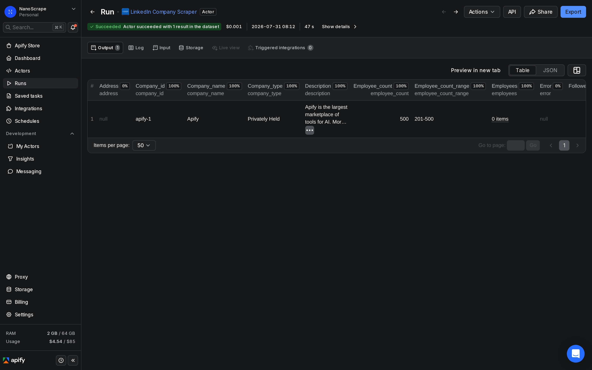
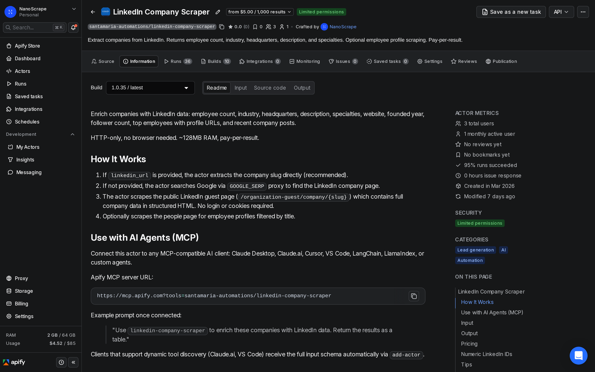
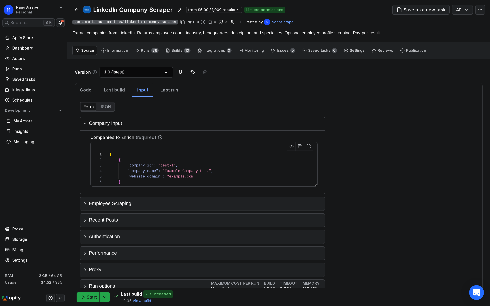
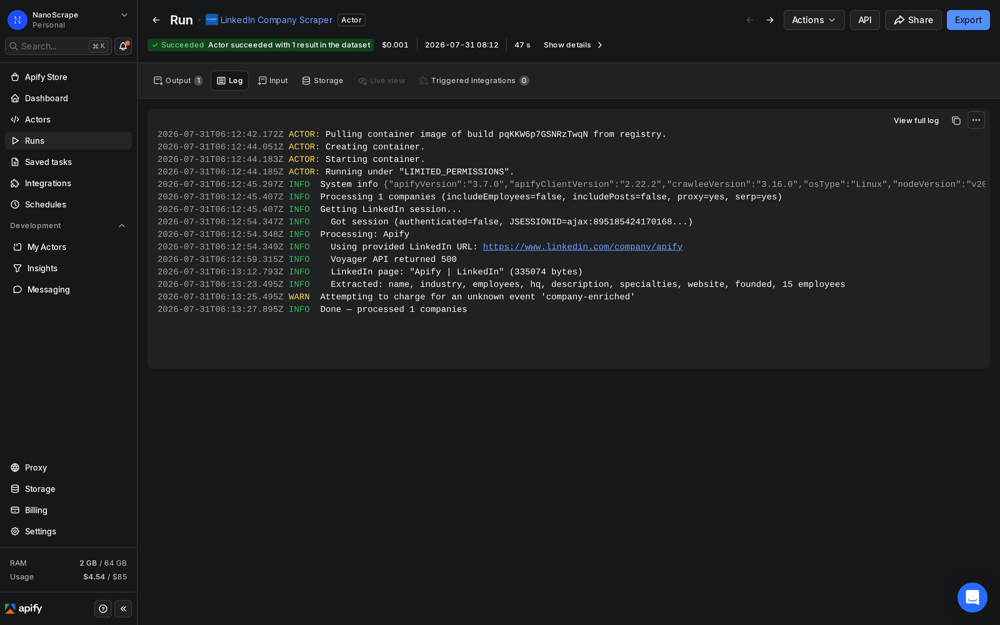

How to Scrape LinkedIn Company Data Without a Login
Enrich any list of companies with LinkedIn data: employee count, industry, headquarters, description, specialties, website, and top employee profiles. No LinkedIn account, no cookies, no browser automation. HTTP-only, so runs are fast and cost about $0.005 per company.

In this tutorial
What data you get
Each run returns one dataset row per company. Fields come from LinkedIn's public guest company page, which does not require a login. The actor uses plain HTTP requests with no browser, so it processes each company in about one to two seconds.
{
"company_id": "lead-001",
"company_name": "Acme Corp",
"linkedin_url": "https://www.linkedin.com/company/acme-corp",
"employee_count": 5000,
"employee_count_range": "1,001-5,000",
"industry": "Software Development",
"headquarters": "Munich, Bavaria",
"description": "Acme Corp builds enterprise software for the manufacturing sector.",
"specialties": ["ERP Integration", "Supply Chain Analytics"],
"website": "https://www.acme-corp.example",
"founded": "2015",
"company_type": "Privately Held",
"follower_count": 14200,
"address": null,
"employees": [],
"posts": [],
"error": null
}Available fields
employee_count: upper bound of the employee range shown on LinkedIn (for example, 5000 for "1,001-5,000").employee_count_range: raw range string as displayed on LinkedIn.industry: LinkedIn industry category.headquarters: city and region.description: full company description from the About section.specialties: list of specialties or focus areas.website: company website URL.founded: year founded.company_type: Privately Held, Public Company, etc.follower_count: LinkedIn follower count.employees: top visible employee profiles with name, title, and LinkedIn URL (requiresincludeEmployees: true).posts: up to 5 recent company updates with text and timestamp.error: null on success; a short message if the company could not be resolved.
Prerequisites
- A free Apify account. Sign up at the actor page. The free tier includes $5 of usage credit each month, which covers about 999 company lookups.
- A list of companies to enrich. LinkedIn URLs are fastest and most reliable. If you do not have LinkedIn URLs, the actor can search Google for the company page using only a company name and optional website domain.
Open the actor and sign up
- Go to the NanoScrape LinkedIn Company Scraper on Apify.
- Click Try for free. Sign up with Google or email. It takes about a minute.
- Once signed in, the actor opens in Apify Console with the Input tab active.

Build your company list
In the Input tab, click JSON editor at the top right. Paste your list of companies in the format below. Each entry needs a company_id (your own key), a company_name, and either a linkedin_url or a website_domain:
{
"companies": [
{
"company_id": "lead-001",
"company_name": "Contoso Ltd",
"linkedin_url": "https://www.linkedin.com/company/contoso"
},
{
"company_id": "lead-002",
"company_name": "Northwind Traders",
"website_domain": "northwindtraders.example"
}
],
"includeEmployees": false
}Tips for building the list:
- Use LinkedIn URLs whenever possible. The actor reads the company slug directly from the URL, which is faster and more reliable than a Google search.
- company_id is your own key. Use any string that ties the result back to your CRM row, spreadsheet ID, or database record.
- website_domain as fallback. When you do not have a LinkedIn URL, the actor searches Google for the company page. Adding the website domain improves search accuracy.
- Numeric LinkedIn IDs: if your CRM stores numeric-ID LinkedIn URLs (for example
https://www.linkedin.com/company/19051), the actor tries a set of candidate slugs derived from the company name and domain. Rows that resolve this way includeresolved_from_numeric_id: truein the output. Rows that cannot resolve come back witherror: "numeric_id_unresolvable"and no charge.

Optional: include employee profiles
Set includeEmployees: true to also scrape the top visible employees from each company's People page. Use maxEmployeesPerCompany (1 to 50) and employeeTitleFilters to target specific roles:
{
"companies": [
{"company_id": "lead-001", "company_name": "Contoso", "linkedin_url": "https://www.linkedin.com/company/contoso"}
],
"includeEmployees": true,
"maxEmployeesPerCompany": 10,
"employeeTitleFilters": ["CEO", "CTO", "Head of Engineering"]
}Run the actor
Click Start at the top right. The actor processes companies in sequence. Each company takes about one to two seconds. A list of 100 companies typically completes in two to three minutes. Progress appears in the live log as each company resolves.

When the run finishes, the status changes to Succeeded. Click Results to preview the dataset. Each row represents one company. Rows with error: null resolved successfully; rows with an error value were not resolved and are not charged.
requestDelay to 3000 or higher to avoid rate limiting. The default of 2000 ms works well for batches up to a few hundred companies.Export your results
From the Results tab, click Export to download the dataset as JSON, CSV, or Excel. For live destinations, use the Integrations panel:
- Google Sheets: click Integrations below the run log, choose Google Sheets, and authorize once. Future runs on this actor will append rows automatically.
- Airtable / Notion / Postgres: same flow via the matching integration.
- Webhook: open Integrations › Add Integration › Webhook and paste your endpoint. Apify posts the full dataset payload when the run finishes.
- n8n / Make / Zapier: call the actor from an HTTP Request node and retrieve results from the dataset endpoint. See the n8n section below for a step-by-step walkthrough.
Automate with n8n
To enrich a CRM export on a schedule (for example, enriching all new leads added each week), connect the actor to n8n using the verified Apify n8n node.
- Open n8n and create a new workflow.
- Add a Schedule Trigger node. Set the interval to once a week or another cadence that matches your CRM update frequency.
- Add a Google Sheets (or CRM) node to read the current list of new companies.
- Add an Apify node. Set Operation to Run an Actor and get dataset. Set Actor ID to
santamaria-automations/linkedin-company-scraper. - In the Input JSON field, build the
companiesarray dynamically from the previous node's output. - Add another Google Sheets node (or a CRM node) to write the enriched rows back.
- Save and activate the workflow.
{
"companies": [
{
"company_id": "{{ $json.crm_id }}",
"company_name": "{{ $json.company_name }}",
"linkedin_url": "{{ $json.linkedin_url }}"
}
],
"includeEmployees": false
}This workflow runs weekly, reads new companies from a Google Sheet, enriches each one with LinkedIn data, and writes the results back. At $0.005 per company, enriching 200 new leads per week costs about $1 per week ($4 per month).
@apify/n8n-nodes-apify.Common use cases
B2B lead enrichment
Your CRM has a company name and website but no LinkedIn data. Run a batch enrichment to fill in employee count, industry, and HQ for every row. Sort by employee count to focus outreach on companies in your target size range. The company_id field lets you match results back to your CRM records without manual lookups.
Sales intelligence: finding decision makers
Enable includeEmployees: true with title filters like ["VP Sales", "Head of Procurement", "CFO"]. The actor returns each matching employee's name, title, and LinkedIn profile URL. Route these directly into a sales sequence or cold-outreach tool.
Market research: segmenting by industry and size
Pull the LinkedIn profile for every company in a geographic area or sector, then group by industry and employee_count_range. This gives you a market map without a data subscription. Combine with Google Maps Scraper to add location density and contact info.
Competitive tracking
Track follower count and recent posts for a set of competitors over time. Run the actor weekly, store results in a spreadsheet, and chart follower_count over time. The posts field returns up to five recent company updates per run, so you can monitor what competitors are communicating publicly without checking their profiles manually.
What it costs
- Actor start: $0.001 per run (one-time flat fee, regardless of batch size).
- Per company enriched: $0.005 per company row returned. That is $5 per 1,000 companies.
- No monthly fees. No minimum spend.
10 companies = $0.051 ($0.001 start + $0.050) 100 companies = $0.501 ($0.001 + $0.500) 1,000 companies = $5.001 ($0.001 + $5.000) Weekly enrichment, 200 leads/week ~ $4.16/month
The Apify free tier includes $5 of usage credit each month. That covers up to 999 company lookups per month at no charge. Companies that fail to resolve (returned with an error value) are not charged.
FAQ
Does this require a LinkedIn account?
No. The actor scrapes LinkedIn's public guest company page (organization-guest/company/{slug}), which does not require a login. All data returned is visible to any anonymous visitor.
What if I only have a company name and no LinkedIn URL?
Set company_name and optionally website_domain. The actor searches Google using the GOOGLE_SERP proxy to find the company's LinkedIn page. Adding the website domain improves accuracy when the company name is common. If it finds the page, it scrapes normally. If it cannot find a match, the row comes back with error: "not_found" and no charge is applied.
Why does a numeric LinkedIn company ID return an error?
LinkedIn requires login to view numeric-ID company URLs (for example https://www.linkedin.com/company/19051). The actor tries a set of candidate slugs derived from the company name and domain. If none match, the row is returned with error: "numeric_id_unresolvable" and no charge is applied. To fix this: find the slug-based URL on LinkedIn (for example https://www.linkedin.com/company/acme-corp) and use that instead.
How many employees can I get per company?
LinkedIn exposes a limited set of employees on the public guest People page, typically 5 to 10 profiles. Use maxEmployeesPerCompany (1 to 50) and employeeTitleFilters to control which profiles are returned. Employees who have set their profiles to private or who are not visible without a login will not appear.
Is the employee count on LinkedIn accurate?
LinkedIn shows a range (for example "1,001-5,000") based on self-reported headcount and member profiles. The actor returns both the raw range as employee_count_range and the upper bound of that range as employee_count. For companies that keep headcount private or have not filled in their profile, this field may be missing.
Is scraping LinkedIn legal?
The actor only accesses data publicly visible on LinkedIn without logging in. The hiQ Labs v. LinkedIn ruling in the US established that scraping public data is not a violation of the Computer Fraud and Abuse Act. LinkedIn's terms of service restrict automated access, so you take on responsibility for your own use case. Consult a lawyer for specific compliance questions.
Related resources
- LinkedIn Company Scraper on Apify: Full actor documentation, input reference, and output field descriptions.
- Google Maps Scraper on Apify: Collect local business data at scale. Discover companies by location, then enrich them with LinkedIn data.
- Website Contact Extractor on Apify: LLM-powered extraction of decision-maker names, emails, and job titles from company websites.
- Website Email Scraper on Apify: Pull emails and phone numbers from company sites. Pairs with LinkedIn enrichment to build contact data.
- All NanoScrape tutorials: Step-by-step guides for every actor in the NanoScrape catalog.